Quilted coat
Previous · revised · compact
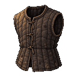
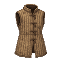
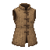
Worn, handmade materials fitted to the actual live item shapes. Original concepts remain preserved; no new equipment rules or base IDs.
Previous · revised · compact



Previous · revised · compact
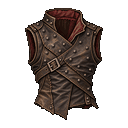
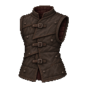
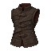
Previous · revised · compact
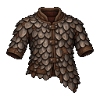
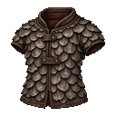
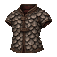
Previous · revised · compact
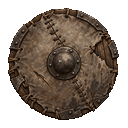
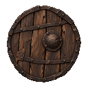
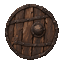
| surveyors shortsword | Keep the founder sword and current ordinary sword pictures; unused alternative retained. |
|---|---|
| quarry hammer | Adopted for the actual Miner's sledge in the tool rack. |
| shaft spear | The live Ash-shaft spear already has this narrow profile. |
| miners sling | Use the newer Leather sling production design (ranged-focus-v1). |
| hazel walking staff | Use the newer Oak Staff production design (ranged-focus-v1); this remains an alternative concept. |
| waxed work jerkin | The live Patched leather jerkin already has this silhouette. |
| quilted work coat | Adapted to the current Quilted coat; new production icon, unchanged item rules. |
| riveted mining coat | Retained concept with no live base; no new gear ID or stats introduced. |
| pit shield | The existing Iron-rimmed buckler now has a dedicated round shield. |
| survey cape | Keep the live full Oilcloth cloak; the short hooded cape remains an unused alternative. |
| prospectors satchel | The live Leather satchel already uses this bag. |
| notched falchion | The live Goblin cleaver uses this picture. |
| gatebreaker mace | Keep the heavier concept. The actual Light mace receives its own narrower variant. |
| garrison spear | The live Boar spear already has the related crossbar adaptation. |
| sentry shortbow | Use the newer Short Bow production design (ranged-focus-v1). |
| cinderwood baton | Use the newer Prayer Wand production design (ranged-focus-v1); no new regional base. |
| raiders leather vest | The live Studded jerkin now has its own asymmetric vest adaptation. |
| riveted guard coat | Adapted to the current Studded jerkin; new production icon, unchanged item rules. |
| garrison scale coat | Adapted to the current Goblin scale shirt; new production icon, unchanged item rules. |
| gate guards shield | Adapted to the current Goblin round shield; new production icon, unchanged item rules. |
| raiders mantle | The live Shadow-dyed cape uses this picture. |
| quartermasters pack | The existing Miner's frame pack is already pictured and remains a Cave & Mine base. |